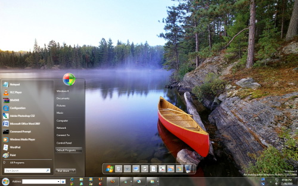

Статьи о компьютере
Новая Windows 8.

Недавно был представлен последний вариант операционной системы Windows 8, отличающийся от предыдущих версий и предлагающий новые возможности.
Во-первых, был изменен интерфейс, который первоначально назвали Metro, внешне он имеет сходство с интерфейсами смартфонов. На нем выводится главная информация. Интерфейс отличается простотой использования, имеется несколько вариантов управления: сенсорный, с помощью мыши или клавиатуры. Таким образом, компания Microsoft учла популярность планшетов и сенсорных экранов. Но в этой версии остался и старый интерфейс в виде «рабочего стола», который будет отображаться в 3D, а цвет темы подстраиваться под цвет обоев. В новой операционной системе нет кнопки «Пуск», отсутствует и классическое меню, которое заменил экран «Start». Претерпел изменения и дизайн диспетчера задач. Удобный и быстрый доступ к интернету обеспечивает браузер InternetExplorer 10, интегрированный с интерфейсом «Windows 8-styleUI» (новое название вместо Metro, которое использует компания).

Для Windows 8 были разработаны специальные программы, которые разворачиваются на весь экран и не отвлекают от работы с дополнениями. Все приложения тесно связаны друг с другом, что дает возможность одновременно их использовать. Например, отправлять фотографии по почте можно, выбрав их одновременно с жесткого диска или социальной сети. В операционную систему полностью интегрировали сервис SkyDive. Таким образом, это позволит автоматически загружать весь контент в компьютер. Это значит, что потерянные данные с локального диска всегда можно будет обновить благодаря этому сервису и доступу в интернет.
Улучшены и базовые возможности. Windows 8 является более надежной, продуктивной, безопасной в плане приватности. Система меньше внимания уделяет объему оперативной памяти и мощности процессора, за счет чего стала более скоростной, что дает определенные удобства при работе на нетбуках и планшетах. К тому же, приложения Windows 7 будут работать в новой версии благодаря обратной совместимости. Архитектура ARM теперь поддерживается не только планшетами, но и Windows 8, поэтому работа в автономном режиме будет более длительной, а затраты энергии уменьшатся.
Читайте также:
Windows XP или Windows 7 — что лучше.
Переустановка операционной системы. Пошаговая инструкция.
Следующая статья:
Bluetooth .Что это и зачем?